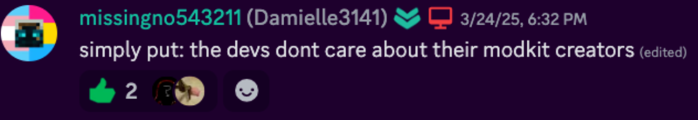
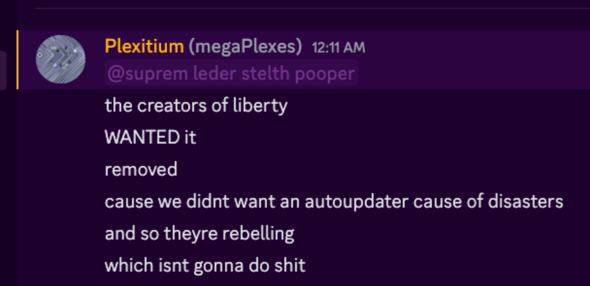
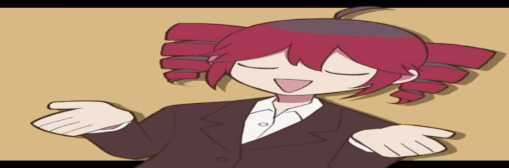

Liberty is being removed in the next Build Island update
Published on: Saturday, 29th of March 2025
Published by:  Eunoia Studios (StealthTrooper36)
Eunoia Studios (StealthTrooper36)
On the 24th of March, missingno543211, a developer of liberty announced that liberty will be removed. The reason provided was that the developers didn’t care about their modkit devs.
What caused them to pull out the modkit?
Well, Toybox told the devs of liberty to remove the auto-updater due to what kiloe did in the disasters kit (insert thousand yards stare here) and the liberty developers decided to just protest.
plex is in eunoia's discord server you should join too xDDDD
What does this mean for Build Island?
The removal of liberty means the removal of 99% of build island’s guns, removal of the gunblock which is used by players to build deadly machines and it will ruin thousands of builds.
Not only that but it means that Build Island will devolve back into using ;gear me items which tend to be broken and rely on the broken tekk modkits.
im gonna pull a cometdummy and add a random picture of ro2noki
there
like and subscribe and hit that bell for more awesome minecraft content!!!!!!!